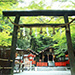
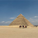

-

 <日月潭九蛙疊像>黃偉玉│品質本部來日月潭這麼多次，第一次看到傳說中疊在一起的九蛙，前一陣子下雨，湖水很滿，還以為見不到了，很幸運地看到了三隻，就像大青蛙揹著小青蛙在湖水游泳般可愛。
<日月潭九蛙疊像>黃偉玉│品質本部來日月潭這麼多次，第一次看到傳說中疊在一起的九蛙，前一陣子下雨，湖水很滿，還以為見不到了，很幸運地看到了三隻，就像大青蛙揹著小青蛙在湖水游泳般可愛。 -
<潭日月飯店>黃偉玉│品質本部就在日月潭湖邊吃著早餐，看著美麗的風景和閃閃發光的湖水，一整天的心情都變更好了。
-
 <雞蛋花>簡志銘│業務一處 \ 客戶服務部因花朵形酷似雞蛋，又名雞蛋花，葉片尾端變寬呈現心型，每個花序可開10~20朵。
<雞蛋花>簡志銘│業務一處 \ 客戶服務部因花朵形酷似雞蛋，又名雞蛋花，葉片尾端變寬呈現心型，每個花序可開10~20朵。 -
 <東京車站>馮朝富│基站產品開發處 \ 基站硬體部車站紅磚外牆與周邊以鋼筋水泥和玻璃帷幕建成的高樓大廈群呈現對比。
<東京車站>馮朝富│基站產品開發處 \ 基站硬體部車站紅磚外牆與周邊以鋼筋水泥和玻璃帷幕建成的高樓大廈群呈現對比。 -
 <Busselton Jetty>劉柏君│IPC研發一處 \ 硬體研發部位於澳洲伯斯的巴瑟爾頓碼頭，搭乘碼頭火車沿著木棧橋到達終點站後，盡頭矗立著一座標示到各個大城市距離的觀光碑，不知道是否有人會來這邊，隨手指定著下一次的旅遊景點呢？
<Busselton Jetty>劉柏君│IPC研發一處 \ 硬體研發部位於澳洲伯斯的巴瑟爾頓碼頭，搭乘碼頭火車沿著木棧橋到達終點站後，盡頭矗立著一座標示到各個大城市距離的觀光碑，不知道是否有人會來這邊，隨手指定著下一次的旅遊景點呢？ -
<巴瑟爾頓碼頭藍色船屋>劉柏君│IPC研發一處 \ 硬體研發部位於澳洲伯斯巴瑟爾頓的藍色船屋，目前已經規劃成木棧道小火車賣票處以及紀念品專賣店，坐落在海洋和沙灘上，隨處可見有人在這邊做著日光浴，看著清澈的海水及藍天，完全是放鬆身心的好去處！
-
<葉影中的彩翼>楊子慧│機構技術處 \ 聲學音響結構部在葉片的綠海中，一隻蝴蝶如輕盈的筆觸停留，其翅膀宛如暮色染上金橙的雲彩，與周遭的翠葉形成鮮明對比，花苞在一旁默默等待綻放的時刻，與蝴蝶一同靜觀時光流淌。這幅畫面，不需言語，卻流露出自然間最純粹的溫柔與和諧。
-
<高千穗的靜謐詩境>楊子慧│機構技術處 \ 聲學音響結構部河水靜靜流淌於幽深的峽谷間，瀑布從岩壁傾瀉而下，激起點點水花，綠樹在高處交織成天然穹頂，陽光灑落水面，如同灑金的墨色畫卷，彷彿置身世外桃源。
-
<草千里的遼闊綠意>楊子慧│機構技術處 \ 聲學音響結構部九州阿蘇草千里廣闊的草原如同一片翠綠海洋，微風吹拂，草浪輕舞。遠方火山環抱，山巒綿延，映襯著湛藍的天空與朵朵白雲，營造出純淨而壯闊的自然美景，令人心曠神怡。
-
 <晚霞滿天>吳柏欣│設計品質保證處晚霞鋪滿整個天空，色彩美麗。
<晚霞滿天>吳柏欣│設計品質保證處晚霞鋪滿整個天空，色彩美麗。 -

<野宮神社>吳柏欣│設計品質保證處在京都的嵐山，隱藏了一所與源氏物語尤有淵源的古老神社。處於竹林之端，古寺之旁，沉睡在一片翠嫩綠林之中，悠久又幽靜的存在。
-
 <小丑漢堡>陳俊翰│電子技術處 \ 安規環保無線認證部小丑漢堡（Lucky Pierrot）是函館地區極具代表性的在地連鎖漢堡店，以獨特的裝潢風格和創意口味聞名。
<小丑漢堡>陳俊翰│電子技術處 \ 安規環保無線認證部小丑漢堡（Lucky Pierrot）是函館地區極具代表性的在地連鎖漢堡店，以獨特的裝潢風格和創意口味聞名。 -
<八幡坂>陳俊翰│電子技術處 \ 安規環保無線認證部從八幡坂的坡頂望去，可遠眺壯麗的函館灣與青森方向的景色，許多遊客更會守候在此，只為捕捉路面電車經過的那一瞬間美景。
-
<大西洋海濱公路>楊欣儒│共同工程處 \ 法規驗證部大西洋海濱公路將在大西洋上數個小島貫連。白色的露營車駛向未知，而紅色轎車從未知而來。
-
<如此巨大卻渺小>楊欣儒│共同工程處 \ 法規驗證部蓋朗厄爾峽灣（Geiranger），被稱為挪威峽灣之王，峽灣全長約15公里。凌晨五點一輛巨型郵輪駛入峽灣，停泊，雖然其如此巨大，但與峽灣呼應卻是那麼的小巧。
-
<精靈之路（Trollstigen）>楊欣儒│共同工程處 \ 法規驗證部前往的精靈之路的時節，該路段正好在整修，車輛無法通行，故恰巧遇見有人徒步、有人騎腳踏車漫步其上。老鷹之路（Ørnesvingen）與精靈之路（Trollstigen）合稱挪威的黃金之路（The Golden Route），以之字形路線聞名。
-
<少女峰>洪秉誠│企業產品硬體工程一處 \ 系統設計部前往瑞士少女峰的蜜月之旅，在壯麗的景色襯托下，這一刻的甜蜜與幸福感更加倍升級了。
-
<艾菲爾鐵塔>洪秉誠│企業產品硬體工程一處 \ 系統設計部法國巴黎最著名的地標艾菲爾鐵塔（也稱作巴黎鐵塔），在夜間每個整點都會有燈光秀。由於六月日照時間較長，日落時間晚，所以我們直到晚間11點才欣賞到這場燈光秀。
-
<白朗峰>洪秉誠│企業產品硬體工程一處 \ 系統設計部白朗峰是許多戶外運動愛好者的天堂，有健行、滑翔傘、滑雪等豐富活動。最大魅力在於能跟大自然親密接觸，在挑戰自我體能的同時，五官感受前所未有的自由。
-
 <灰牆>曾玟翔│平鎮營運一處 \ 海關課藍天白雲配上文青字眼的石牆，美不勝收。
<灰牆>曾玟翔│平鎮營運一處 \ 海關課藍天白雲配上文青字眼的石牆，美不勝收。 -
<冬日合掌‧歲月靜謐>賴譽升│工業設計處 \ 產品設計二部白雪覆蓋著茅草屋頂與小徑，冬日的陽光灑落在靜謐的合掌村，讓人感受到歲月的悠然與溫暖。偶爾有人走過雪地，留下短暫的痕跡，卻不打擾這份恬靜。這裡，時間彷彿放慢了腳步，讓人心也隨之沉澱，感受自然與人文交融的安穩氣息。
-
<靜謐雪境中的歲末記憶>賴譽升│工業設計處 \ 產品設計二部合掌村的冬日，如詩如畫。厚雪覆蓋茅草屋頂，彷彿時間在此緩緩凝結。腳印劃過純白，是旅人留下的短暫痕跡，也是心靈與自然交會的軌跡。寒意中透著溫暖，靜謐中蘊藏故事，這是歲末最柔軟的風景，也是記憶最深處的安靜角落。
-
<布拉格千塔之城>金國琳│產品十三處布拉格滿城的紅色屋頂在陽光下閃耀，層層堆疊出獨特的天際線，襯托出這座『千塔之城』的浪漫風情。
-
 <世界最美圖書館-克萊門特學院>金國琳│產品十三處位於布拉格的克萊門特學院巴洛克風圖書館，被譽為世界最美的圖書館之一。至今已有300多年歷史，天花板濕壁畫與雕刻木架交織，擁有許多珍貴古籍，是布拉格最具人文氣息的景點之一。
<世界最美圖書館-克萊門特學院>金國琳│產品十三處位於布拉格的克萊門特學院巴洛克風圖書館，被譽為世界最美的圖書館之一。至今已有300多年歷史，天花板濕壁畫與雕刻木架交織，擁有許多珍貴古籍，是布拉格最具人文氣息的景點之一。 -
 <夜色>黃如芬│專案開發處 \ 專案管理一部橘色顯黑，黑夜在橘紅色夕陽餘暉中更顯耀眼。
<夜色>黃如芬│專案開發處 \ 專案管理一部橘色顯黑，黑夜在橘紅色夕陽餘暉中更顯耀眼。 -
<沙漠上的兒童>連柏柔│企業產品硬體工程一處縱使沙漠上的物質生活不比都市豐盛，但當我看到這群小孩和小狗盡情玩樂的天真模樣，或許他們的精神生活根本不輸給我們呢！
-
<撒哈拉沙漠>連柏柔│企業產品硬體工程一處若有機會到沙漠旅遊，極推薦自費行程—衝沙，一群人乘坐在四驅越野車上，在一望無際的沙漠中衝過一個又一個高聳沙丘，真是令人驚奇的體驗啊！
-
 <摩西分海>歐怡伶│系統應用研發處 \ 系統應用一部位於澎湖的奎壁山，在退潮時出現一條礫石步道，即可登陸對面的無人小島赤嶼。
<摩西分海>歐怡伶│系統應用研發處 \ 系統應用一部位於澎湖的奎壁山，在退潮時出現一條礫石步道，即可登陸對面的無人小島赤嶼。 -
 <百萬夜景>歐怡伶│系統應用研發處 \ 系統應用一部來神戶摩耶山搭乘登山纜車及空中纜車後，抵達最高點掬星台，欣賞百萬夜景。
<百萬夜景>歐怡伶│系統應用研發處 \ 系統應用一部來神戶摩耶山搭乘登山纜車及空中纜車後，抵達最高點掬星台，欣賞百萬夜景。 -
<靜謐之美>張育群│機構技術處 \ 模具部光影中綻放的荷花，靜靜提醒我，美好常在寧靜時刻。
-
 <古塔暮色>張育群│機構技術處 \ 模具部千燈塔劃破藍幕，靜謎如沉睡的巨靈，暮色中訴說著千年未變的鎮。
<古塔暮色>張育群│機構技術處 \ 模具部千燈塔劃破藍幕，靜謎如沉睡的巨靈，暮色中訴說著千年未變的鎮。 -
 <石門水庫>許聖芳│歐美第一設計品保處 \ TPE設計品保一部爬到石門水庫最高處，往下看的美景！
<石門水庫>許聖芳│歐美第一設計品保處 \ TPE設計品保一部爬到石門水庫最高處，往下看的美景！ -
<只存在記憶中的畫面>胡瑞慈│產品十二處 \ 硬體十二部照片是淺草的神社前的仲見世商店街，是用底片相機來拍出我所想像中的老街。
-
<鯨鯊>胡瑞慈│產品十二處 \ 硬體十二部攝於沖繩美麗海水族館，在前景其它魚的襯托下，更禿顯出鯨鯊的巨大的震撼。
-
 <維也納的街頭>胡瑞慈│產品十二處 \ 硬體十二部路上觀察一直都是一件很有趣的事情，在維也納過馬路時，不經意觀察到了可愛的人行號誌。
<維也納的街頭>胡瑞慈│產品十二處 \ 硬體十二部路上觀察一直都是一件很有趣的事情，在維也納過馬路時，不經意觀察到了可愛的人行號誌。 -
<法國—卡爾卡頌城堡的夜色>劉秋玲│六標準差執行小組卡爾卡頌城堡是一座中世紀城堡，夜幕低垂遊客散去，城外街道呈現一股難得的寧靜。想像著中古世紀的人們也曾經在這生活著，喜歡這種氛圍。
-
 <法國最神聖教堂—聖米歇爾山>劉秋玲│六標準差執行小組聖米歇爾山頂上建有著名的聖米歇爾山隱修院，是一座距海岸約1公里的岩石島，漲潮與退潮有著不同的風貌，是天主教徒最知名的朝聖地與旅遊勝地。不只周杰倫專輯封面曾在聖米歇爾山拍攝，同時也是魔戒皇城的取材地。
<法國最神聖教堂—聖米歇爾山>劉秋玲│六標準差執行小組聖米歇爾山頂上建有著名的聖米歇爾山隱修院，是一座距海岸約1公里的岩石島，漲潮與退潮有著不同的風貌，是天主教徒最知名的朝聖地與旅遊勝地。不只周杰倫專輯封面曾在聖米歇爾山拍攝，同時也是魔戒皇城的取材地。 -
<清新脫俗>劉秋玲│六標準差執行小組趁著天氣晴朗，上陽明天賞櫻花。耀眼的陽光在粉粉的櫻花上呈現光影，有種特別的美感。
-
 <櫻井二見浦夫婦岩與白色鳥居>陳千茱│先進產品處 \ 體驗設計技術部日本系島的代表性景點，位於水中的白色鳥居。與傳統朱紅色鳥居不同，這座白色鳥居象徵「淨化」與「重生」，也是通往神聖空間的純潔之門。
<櫻井二見浦夫婦岩與白色鳥居>陳千茱│先進產品處 \ 體驗設計技術部日本系島的代表性景點，位於水中的白色鳥居。與傳統朱紅色鳥居不同，這座白色鳥居象徵「淨化」與「重生」，也是通往神聖空間的純潔之門。 -

<Pyramid>王凱翔│工程支援處 \ 行政發展部圖中是古夫金字塔，位於埃及開羅吉薩金字塔區，也是最具代表性的金字塔。在這裡，可以邊騎駱駝，邊欣賞古埃及人偉大的建築工藝結晶。據說，建造一座金字塔，需約花費20年的時間。在地導遊還開玩笑說：「即便我介紹的再怎麼仔細，說明金字塔的建造工具及可能的方法，你們(觀光客)仍會認為這是外星人蓋的！」確實，親眼見識到這宏偉的建築，真的很難相信是距今約四千多年前的人們所蓋的。
-
 <Camel>王凱翔│工程支援處 \ 行政發展部吉薩金字塔旁的駱駝群，現場看才發現駱駝真的很大隻，又高又壯，聽導遊解說才曉得，古埃及人並沒有以駱駝為交通工具，主要還是以馬或驢子為主，駱駝是後來的征服者所引入的。
<Camel>王凱翔│工程支援處 \ 行政發展部吉薩金字塔旁的駱駝群，現場看才發現駱駝真的很大隻，又高又壯，聽導遊解說才曉得，古埃及人並沒有以駱駝為交通工具，主要還是以馬或驢子為主，駱駝是後來的征服者所引入的。


{kind=link}
{kind=link}
{kind=link}
{kind=link}
{kind=link}
{kind=link}
{kind=link}
{kind=link}
{kind=link}
{kind=link}
{kind=link}
{kind=link}
{kind=link}
{kind=link}
{kind=link}
{kind=link}
{kind=link}
{kind=link}
{kind=link}
{kind=link}
{kind=link}
{kind=link}
{kind=link}
{kind=link}